AI Agent / Vision agent
Give a goal in plain language. The agent sees the screen, clicks, types, opens apps, and researches the web until the task is finished.
No-code programming & desktop automation for Windows
OffCode Automation Tool: an AI-powered programming & automation tool for Windows that automates repetitive tasks and data entry without coding. The AI Agent takes a whole task in plain language and does it for you: it sees the screen, clicks, types, searches the web, and handles files until the job is done. AI-powered features also let you generate automation scripts from natural language (OpenAI, Claude, Gemini, DeepSeek, OpenRouter, Ollama) and create social media posts with AI. Think of it as a "robot" that can see your screen, find text or buttons, and perform actions like clicking, typing, and navigating: just like a human would.
The application combines OCR (reads text from your screen), UI Automation (finds buttons and controls via Windows accessibility), and mouse/keyboard simulation. When exact text isn't found, AI Semantic Search can interpret your intent and locate the right element. This powerful combination allows you to automate tasks that would otherwise require manual intervention.
Browse screenshots with the arrows or by swiping
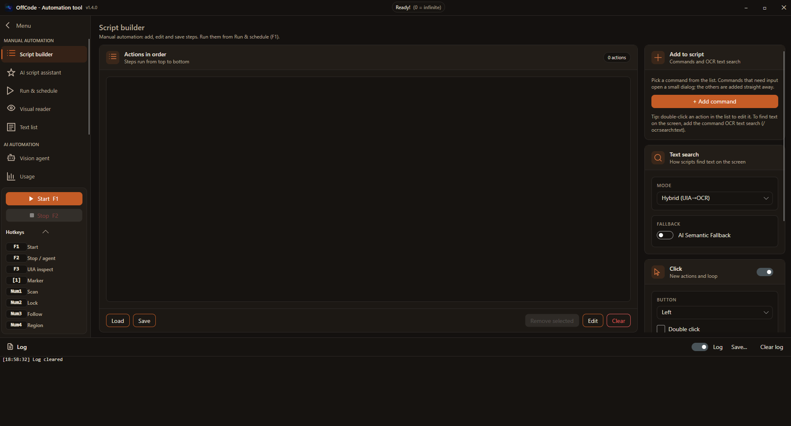
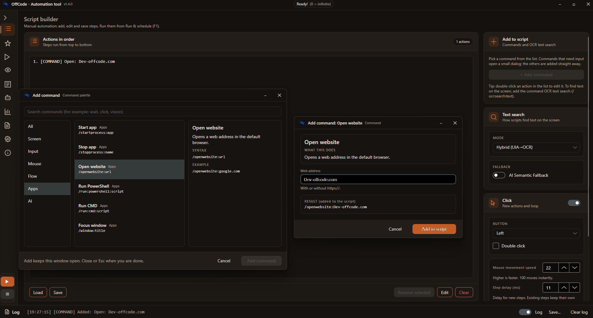
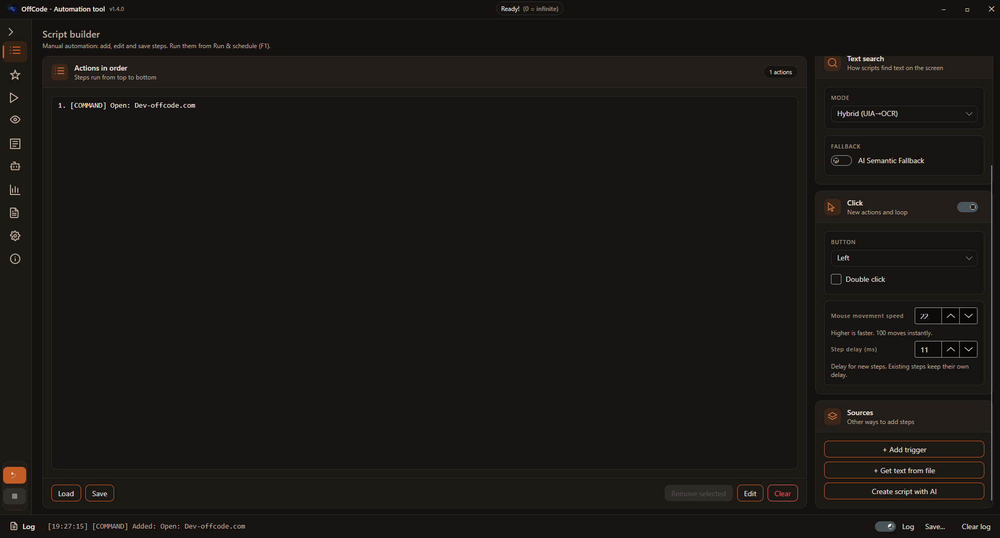
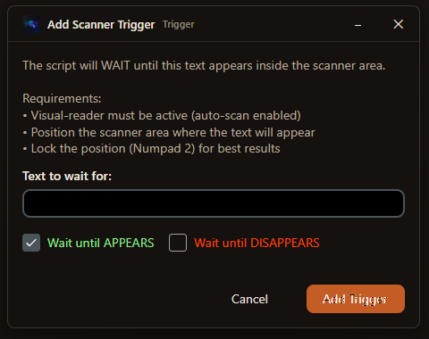
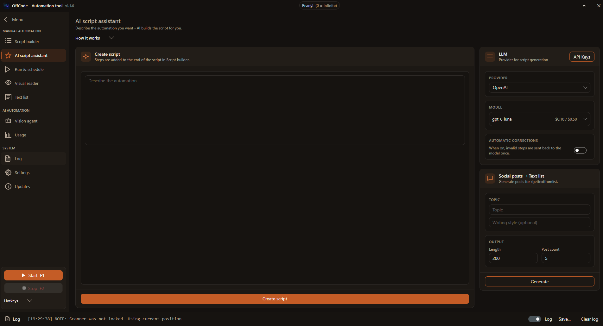
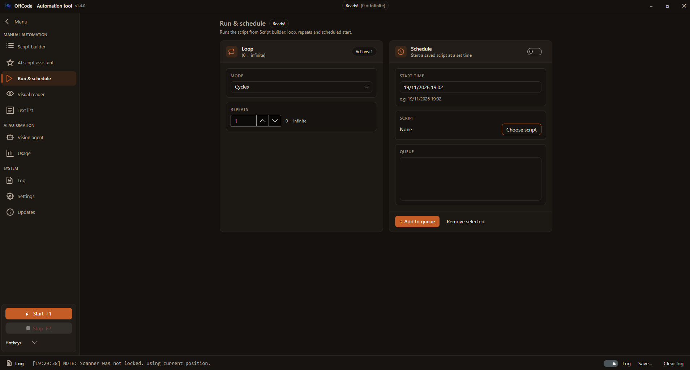
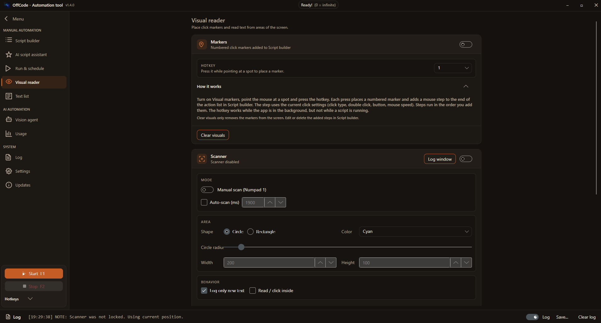
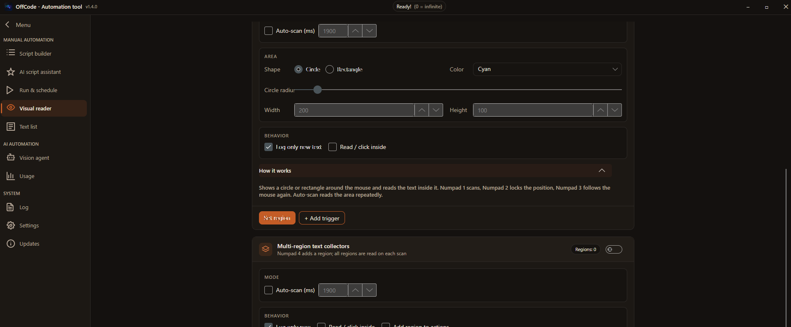
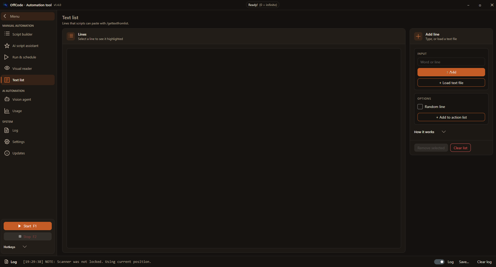
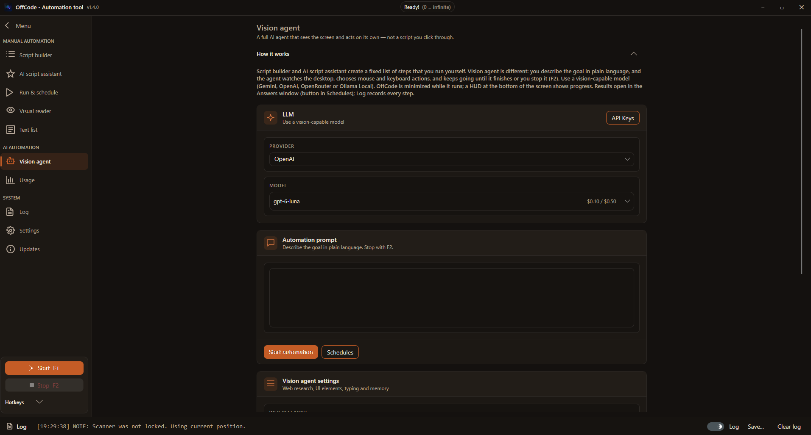
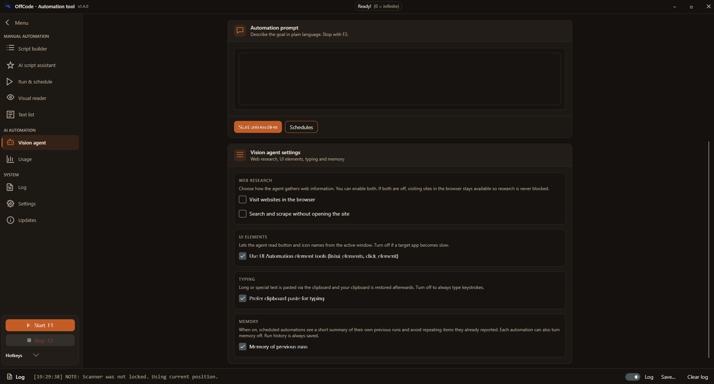
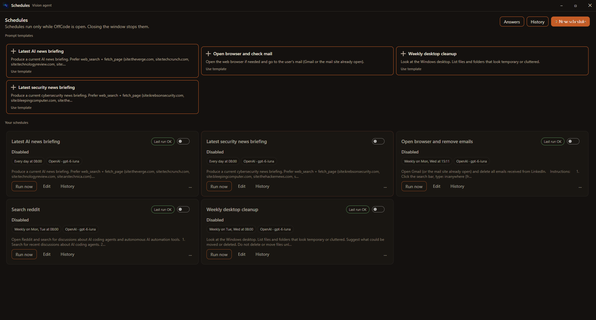
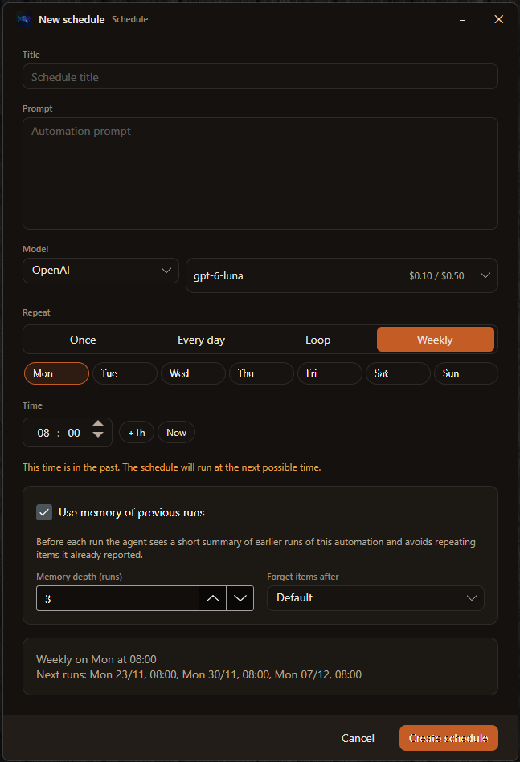
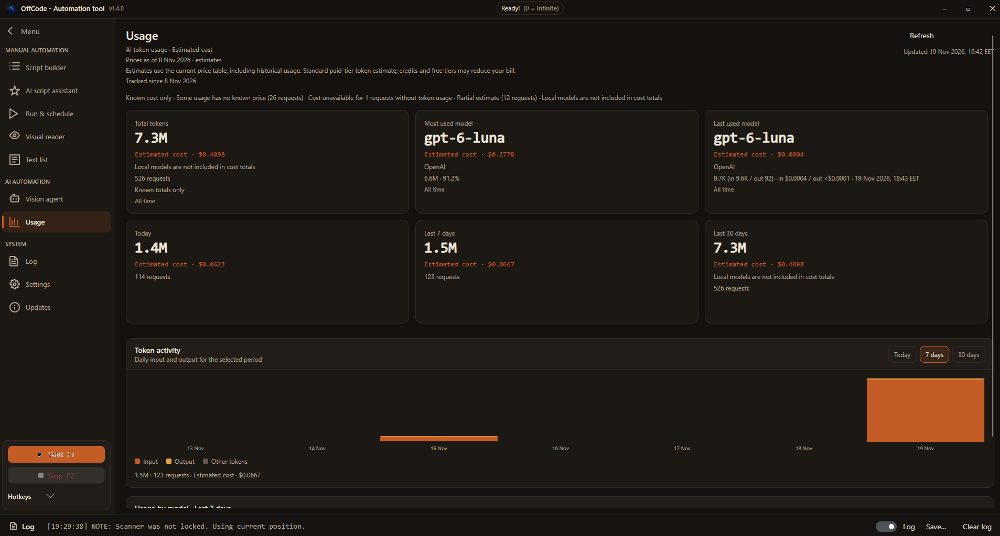
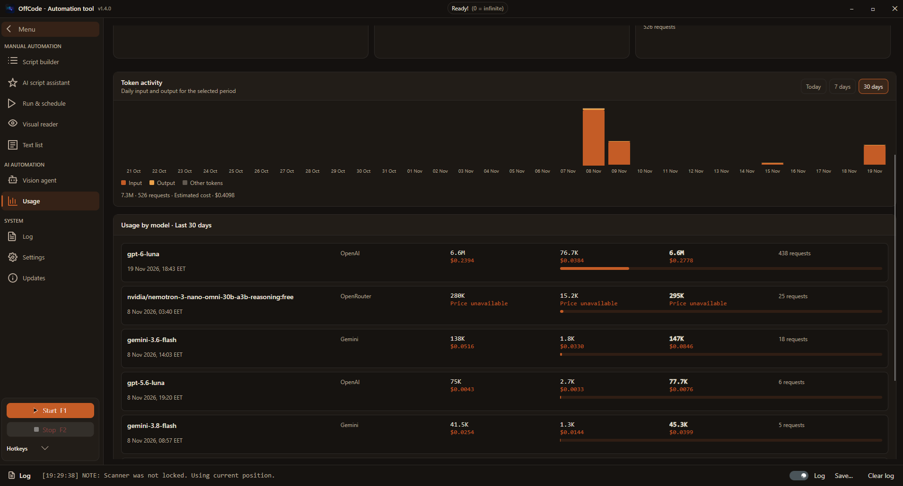
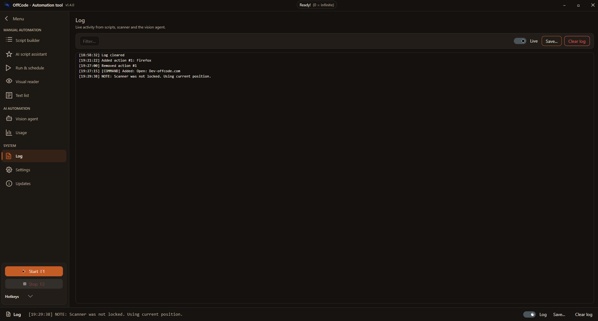
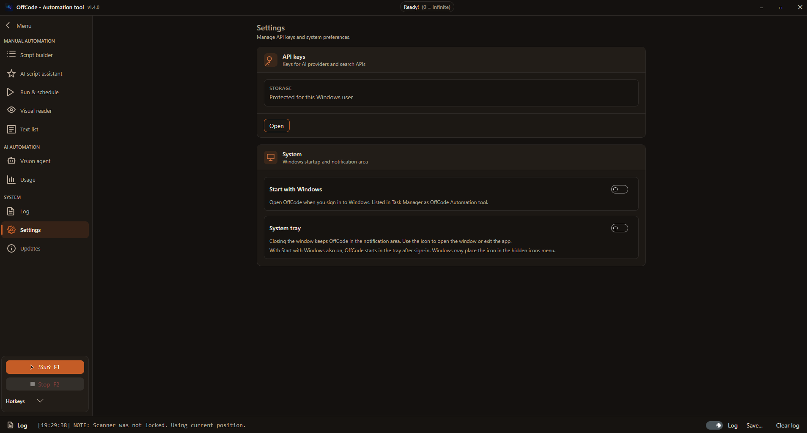
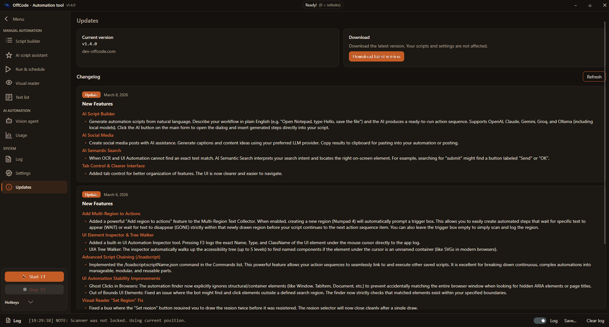
Browse videos with the arrows or by swiping
Give it a task in plain language and let it work
The AI Agent (Vision agent) is not the Script Builder. You describe a goal; the agent looks at the screen and does the clicking, typing, and web research itself until the job is done. Manual automation is the Script Builder: you, or the AI Script Builder, write a repeatable list of commands, and you control every step.
Give a goal in plain language. The agent sees the screen, clicks, types, opens apps, and researches the web until the task is finished.
Build a repeatable command sequence (/click, /type, OCR, triggers). The AI Script Builder can draft the steps; you still own the script.
Type a goal such as "collect the latest posts from this site and save them to a file". The agent looks at the screen after every step and stops when the job is done.
OffCode does not sell AI credits. You paste the API key from the provider you choose, and you pay that provider only for what you use. Keys stay encrypted on your PC.
Ask for news, prices, or contact details and get a short answer with the source link.
Creates, reads, and edits text files, and runs PowerShell, cmd, or Python when that is the fastest way.
A HUD at the bottom of the screen shows the current tool, the step number, background commands, and your goal.
Run the same agent task daily, weekly, or in a loop. It remembers earlier results and reports only new items.
The same provider list as in the app. Pick one, add your key, and the agent uses that account.
Gemini includes a free daily API allowance from Google, so you can try the agent without buying tokens first. The free limit is set by Google and can change. Other cloud providers bill you for the tokens you actually use. Ollama Local runs on your machine with no API bill.
Script Builder, OCR, Visual Reader, and every command you run yourself
This is the Script Builder side of the tool. You assemble a sequence of actions and run it on demand or on a schedule. Unlike the AI Agent, it does not decide the next click from a screenshot: it follows the script. Use the AI Script Builder when you want a first draft of that script in plain English.
Generate automation scripts from natural language using cloud LLMs.
Create social media posts with AI assistance.
Find text on screen using OCR and AI fallback.
A real-time scanner overlay that follows your cursor or stays locked in place, reading text from the selected screen area as it appears.
Numbered markers on your screen for important click locations.
Wait for text to appear or disappear before the script continues.
[WAIT FOR TEXT] "message" pauses until text appears in the scanner area
[WAIT GONE] "message" waits until it disappearsAutomated input for any application.
Build automation sequences step by step.
/loadscript:name.json runs another saved
scriptFeed one line per run from your own list of values.
Available script commands, typed or picked from the command palette.
Browser-based tasks.
Run your script at specific times automatically.
Quick access shortcuts.
Read text from multiple visual boxes at the same time.
Reads and interacts only within visual box boundaries.
Automate anything you can imagine
If this automation tool fits your workflow, these pages help you compare the broader product direction, follow updates, and review the buying flow.
Simple one-time pricing for lifetime access
The regular price is $39. Now on sale for a limited time at $25.
Full automation tool including all future updates and support.
Full C# source code access for developers.
Complete source code (~12,000 lines of C# code)
Offcode Automation Tool is a Windows desktop automation application that combines OCR text detection, UI Automation, and mouse/keyboard simulation to automate virtually any computer task.
You can automate web browsing (form filling, searches), document work (Excel, Word tasks), gaming (repetitive tasks), data collection, and more. The tool works with any application on your Windows computer.
The Visual Reader is a transparent overlay that shows a scanner area (circle or rectangle) following your cursor. It continuously reads text from the selected screen region, perfect for monitoring dynamic content like game timers, chat messages, or any changing text.
Visual Markers are numbered green circles you can place on the screen to mark important click positions. Choose a hotkey (e.g. 1-9, F3-F12, Numpad) in Settings and press it to add a marker at your current mouse position. Markers display their coordinates and can be used in automation scripts for precise clicking.
Scheduled Start lets you run your automation script at specific times. Enter a date and time in the text field and click "+Add to queue" to add it to the list. You can add multiple times; they run in order. When a time is reached, the script starts automatically and that entry is removed from the list; the next scheduled time then runs when due. Use "Remove selected" to remove a chosen time from the list. Enable "Scheduled start" to activate the queue.
Use the Text list feature. Open it via "+Get text from file". Load lines from a .txt/.md file or add them manually. Click the button there to add a "Get text from list" step to your action sequence. When the script runs that step, the next line from the list is copied to the clipboard and marked as used. The following action can paste or type it (e.g. into a search box or form). You can choose random order so each run uses a random unused line. This way every loop iteration can use a different value from your list.
Describe your automation in plain English (e.g. "Open Notepad, type Hello, save the file"). Choose an LLM provider (OpenAI, Claude, Gemini, DeepSeek, OpenRouter, or Ollama, including local Ollama). The AI generates a ready-to-run action sequence that you can insert into your script with one click.
The AI Agent takes a whole task in plain language, for example "collect the latest posts from this site and save them to a file". It looks at the screen after every step, clicks, types, opens apps and web pages, and stops when the goal is done. Press F2 to stop it at any time.
The AI Agent (Vision agent) takes a goal in plain language and drives the screen
itself: it sees, clicks, types, and researches until the job is done. Manual
automation is the Script Builder: you build, or generate with the AI Script
Builder, a repeatable list of commands such as /click and
/type. You control every step.
The AI Agent uses your own API key with OpenAI, Claude, Gemini, Ollama, Ollama Local, OpenRouter, or DeepSeek. You pay that provider for what you use; OffCode does not sell AI credits. Gemini includes a free daily API allowance set by Google. With Ollama Local everything stays on your computer. Keys are stored encrypted on your PC.
Yes. Schedule agent runs daily, weekly, or in a loop. Every run is saved to a history list, and the agent can remember earlier results so a repeated run skips items it already reported.
Yes. A small HUD at the bottom of the screen shows the tool the agent is using right now, the step number, and your goal. Results appear in the Answers window, and every action is written to the log with its duration.
When OCR and UI Automation cannot find an exact text match, AI Semantic Search interprets your search intent and locates the right on-screen element. For example, searching for "submit" might find a button labeled "Send" or "OK".
Scanner Triggers enable conditional automation using the Visual Reader. Use `[WAIT FOR TEXT] "message"` to pause your script until specific text appears in the scanner area, or `[WAIT GONE] "message"` to wait until text disappears. The script continues automatically when the condition is met.
OCR (Optical Character Recognition) reads text directly from your screen, allowing the tool to find and interact with text elements like buttons, fields, and links in any application.
UI Automation uses Windows' built-in accessibility features to find and interact with interface elements. It's faster and more accurate than OCR for supported applications.
Create an action sequence by adding steps like Wait for Text, Click, Type, Copy, Paste, and more. Use special commands like /copy: /wait: /type:. Press F1 to start the automation and F2 to stop.
Offcode Automation Tool works on Windows 10 and 11. The tool uses Windows' built-in OCR engine and accessibility features.
No. Offcode Automation Tool is built for Windows users without programming experience. You create automations with visual actions, simple commands and an easy script editor instead of writing code.
Yes! You can set the loop count to repeat the entire sequence multiple times, or set to 0 for infinite loops (stopped with F2).
No, the application does not collect any personal data or usage information. All automation runs locally on your computer.
Yes, the license is a one-time payment for lifetime access. There are no recurring monthly or yearly fees.